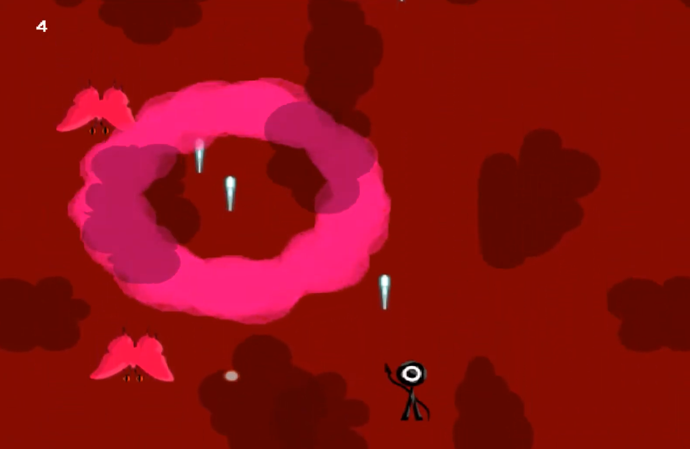
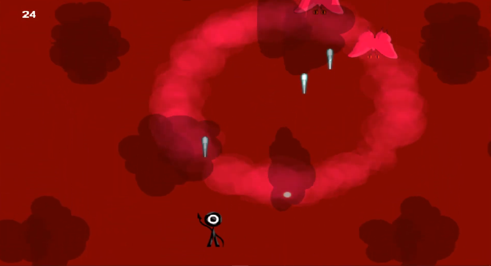
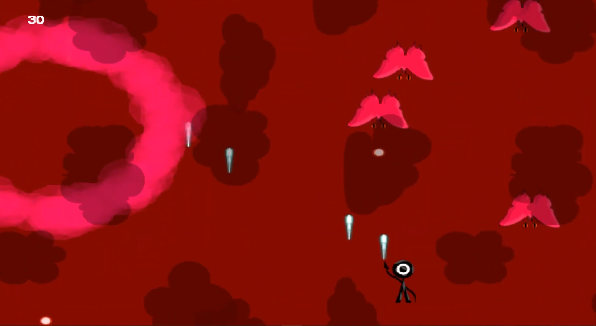
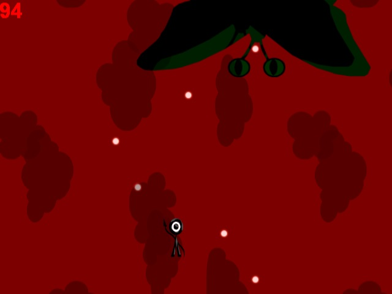

Концепция
Динамичный вертикальный shoot 'em up про супергероя Eyeman'а. Игрок летит по небу, уничтожая волны монстров различных типов. В конце игры ожидает босс-файт. Игра отличается яркой графикой, нарастающей сложностью и классическими механиками жанра: стрельба, уклонение и подбор бонусов.
Цель проекта
Создать динамичную аркадную игру в жанре shoot 'em up с нарастающей сложностью и финальным боссом.
Задачи
- Реализовать систему стрельбы и управления персонажем
- Создать несколько типов противников с различным поведением
- Спроектировать систему волн с нарастающей сложностью
- Разработать финального босса с несколькими фазами
- Реализовать систему подсчёта очков
Результат
Создана завершённая аркадная игра с системой волн противников, несколькими типами врагов и финальным боссом. Проект продемонстрировал навыки работы с игровыми механиками и балансировкой сложности.
Скриншоты




